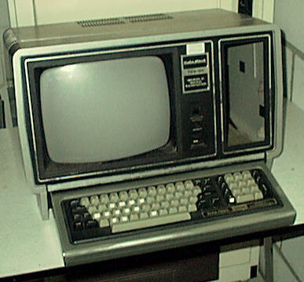
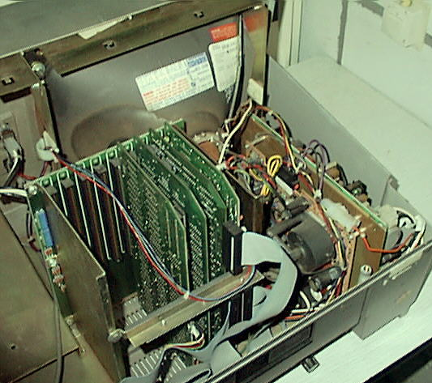
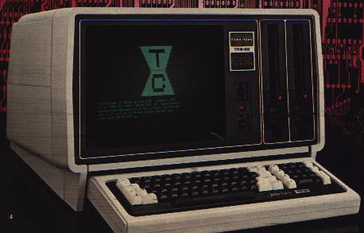
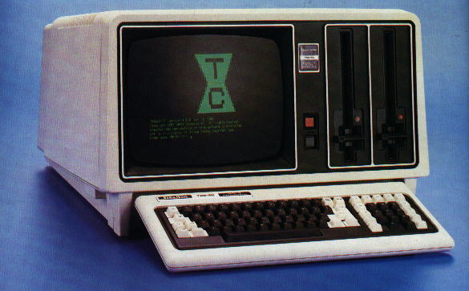
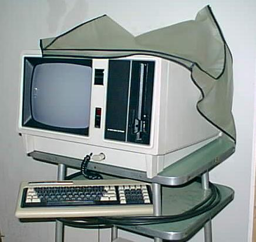
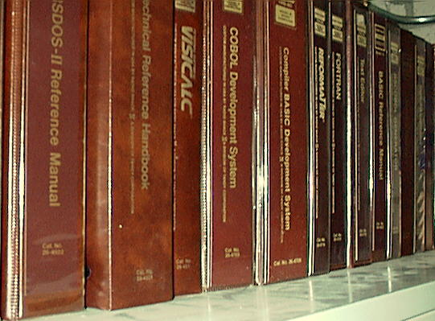
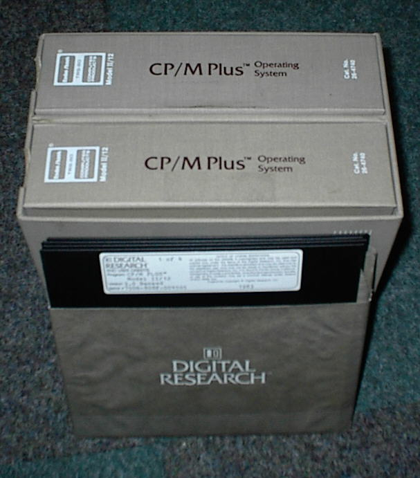

The TRS-80 Model II

My Model II. The floppy drive has been removed for repairs.
The first computer I owned was a TRS-80 Model I.
A great deal of pages have
been written about this machine, no need for me to add another one. Later
Tandy introduced the Models III and 4, wonderful machines you could upgrade
to if your Model I gave up the ghost. But what always intrigued me was the
"missing link", the TRS-80 Model II. There were impressive stories (and prices)
about it in the Tandy catalog, but nobody I knew owned one. Years later,
when my "fame" as a computer collector had spread around, I finally got a call from
someone who wanted to get rid of a Model II. Bingo!
Information on the TRS-80 Model II

Inside of Model II. Computer card cage on the left, monitor circuit and power supply on the right.
The Model II is a computer system that was manufactured in the USA
by Tandy between ~1980 and ~1984. It is a
large cabinet which holds the computer, the monitor and a single sided full height
Shugart 8 inch drive, which used single sided floppies with a capacity of
500K. (That was an enormous amount compared to the ~87K that was free on a
Model I TRSDOS system disk.) The computer itself is on a number of cards in a
passive backplane. The processor is a 4 MHz Z80A.
The system has a complete Z80 chipset, the PIO, SIO, DMA
and CTC are all there. It has 64K RAM and a ROM that can be bank switched away,
ideal to run CP/M. There are two serial ports and one parallel. The display
is 80x24. Three extra 8 inch drives can be connected, so you could have
2MB disk space online. Later there even was a 8 meg external hard disk
available.
You got TRSDOS and BASIC with the system, and an impressive set of manuals
with detailed descriptions of the DOS and BASIC commands, and even
detailed descriptions of the DOS service calls you could use in machine
code programs. To top it off you also got the technical hardware manual
with all the schematics of the computer and monitor, and a service manual
of the disk drive. Options for the machine included a hard disk controller,
an arcnet network card, a graphics card and a 6 MHz 68000 board set with extra
memory (up to 512K) so it could run XENIX.

The Model 16 (1983)
Later there appeared extra members of the Model II family that were
compatible:
The Tandon slimline drives used in the later models were different from
the old Shugart full-size ones, they were double sided and could hold 1.2MB. They had a
faster step rate which speeded up disk access. They used low voltage
motors to rotate the floppy, so were less noisy and ran only when there was
disk access instead of all the time like the old drives did. Unfortunately
they were less reliable.

The Model 12 (1984)
The Model 12 and Model 16B had a new keyboard and a white cabinet, instead of
the dark grey other ones, a bit like a giant Model 4. The Model II had a white screen,
all the others a green one.
There were several operating systems for the Model II range:

Benson Chow's Model 16B with internal hard disk (1984)
The Model 16 came with TRSDOS-II, TRSDOS-16 and a 68000 machine code editor/assembler.
If you ran XENIX you could attach two terminals
to the system for a total of three working positions. If you were very
careful with the external hard disk, especially with the power up and power down
sequences, the system was reliable.
The Tandy 6000 had a better designed 68000 board that ran at 8 MHz and a faster
hard disk, so its total speed was much faster than the Model 16 and 16B.

Row of Model II/16 software
Tandy had a great deal of software for the Model II. In the DOS itself was
a communications program. There was an advanced version of their strange
Scripsit word processor, that had the posibility of outputting documents to
the serial port for transfering to other systems. The well known Visicalc
was available (and it could use extra memory cards for very big spreadsheets)
as well as the Profile Plus database program. The programming
languages COBOL, FORTRAN and compiled BASIC were available, as well as a
great macro assembler. There even were very specific programs, like
Ligitation Support for lawyers, Job Costing for architects, ReFormatter to
exchange disks with IBM mainframes, Financial software etc etc.
The list is very long.
Unfortunately there was not much support for the system from firms other
than Tandy. There was a thin bimonthly magazine, the Twelve/Sixteen, and
the 80 Micro magazine had a Model II/12/16 column, and with every BASIC
program it published there was a list of changes needed to get it to work
on the Model II. RACET Computes sold a number of utilities for the Model
II, so you had almost all the features of NewDOS/80 added to the Model II
DOS. There were Superzap, a disk editor, a fast single pass assembler, a
disassembler, extensions to the BASIC language, etc. It was a great
package.

But fortunately there was CP/M for the Model II. I have two. One was made by
FMG corporation, version 2.21. It ran every CP/M program I tried. Tandy had a CP/M Plus
for the Model II, 12 and 16, available in the original Digital Research binders, with
the TRS-80 logo added to them! It supported hard disks in the TRSDOS format.
It could read Pickles and Trout CP/M double density disks. You got four diskettes. CP/M plus boot disk
banked, boot disk unbanked, utilities disk and TRSDOS floppy conversion disk.
For CP/M
there was the IMP communications program, which had an extension for the
serial ports on the Model II. It was quite fast.
The Model II and its siblings were a fast enough and flexible machine with
a great deal of software available for it. They could do things that were
impossible with most other systems available at their time. Unfortunately
it was very expensive and very noisy.
It is hard to make system disks for the Model II available for download, since
the Model II uses 8 inch drives. But finally there is a solution. If you build
a cable to connect a HD 5.25i drive to the Model II, it is possible to use 5.25
floppies with the machine, and you can use the Teledisk program to create copies
of system disks on 5.25 floppies. As a test I built a cable per the instructions
on Frank Durda's page
and I created an image of a CP/M disk for the Model II
CPM-MII.TD0
Warning! This image might or might not work. It should be able
to boot the Model II, but I have not always been successful in running
programs off it.